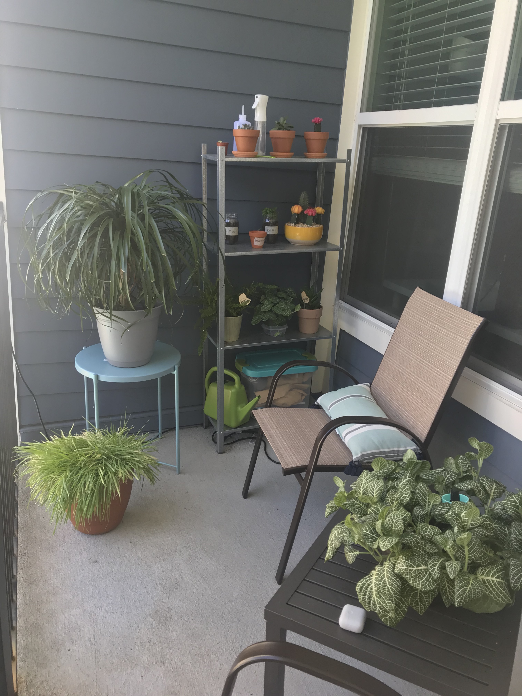

One good thing that has come out of the year 2020 is discovering hobbies that I am very passionate about! If you asked me if I had any hobbies prior to the pandemic, I would shamefully admit that I didn't have any. I'm so glad that is no longer the case!! The follwing are 2 hobbies that have kept me sane during quarantine:
As a child, I would always watch my grandfather tend to his garden. He grew all kinds of things ranging from peach trees, to pecan trees to mint and a variety of flowers. I never gave it a try myself because I always assumed that I didnt have a green thumb. Years later, I've come to realize how therapeutic and forgiving plants can be. I, like so many others, suffer from generalized anxiety disorder. My houseplants have become a safe haven that I can turn to when my bouts of anxiety become overwhelming. It has also become a way for me to connect with my grandfather after his passing. I like to think he helps keep my plants healthy and lively!
If you're a new and aspiring plant parent, I suggest starting out with resilient and forgiving plants such as spider plants or succulents! Caring for these plants will allow yourself to ease into getting used to sticking to a watering and fertilizing schedule. If you're interested in shopping local for some new plant babies, I highly reccomend checking out Plant Nerds, an Atlanta-based online plant shop.
I have definitely gained quite a few "pandemic punds" in the last few months, thanks to my love of exploring local eateries! There's something about trying new and yummy food that just warms my soul! The following are some of my favorite new finds split into categories(listed in no particular order):